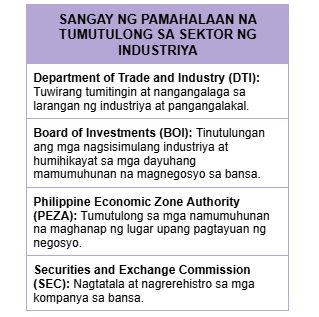
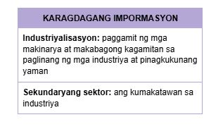

Tumutukoy sa pagproseso ng mga hilaw na materyal at paggawa ng mga produkto na kinakailangan para sa pampublikong pamilihan
Naglalayong maiproseso ang mga hilaw na materyal upang makabuo ng produkto na ginagamit ng tao
Pagkuha at pagproseso ng mga yamang mineral (metal, di-metal, o enerhiya) upang gawing tapos na produkto o kabahagi ng isang yaring kalakal
Ang mismong produkto, hilaw man o naproseso ay nagbibigay ng kita para sa bansa
Pagtugon ng mga pangunahing pangangailangan ng mga mamamayan tulad ng tubig, kuryente, at gas
Paglalatag ng mga imprastraktura at angkop na teknolohiya upang maihatid ang serbisyo
Paggawa ng mga produkto sa pamamagitan ng manual labor o ng mga makina
Nagkakaroon ng pisikal o kemikal na transpormasyon ang mga materyal o bahagi nito sa pagbuo ng mga bagong produkto
Pagtatayo ng mga gusali, estruktura, at iba pang land improvements
Pondo at kompetisyon
Paghina ng lokal na industriya
Demand
Nagsimula sa programang FIlipino Muna ni Pangulong Carlos P. Garcia
Naglalayong bigyan ng higit na malaking partisipasyon ang mga Pilipino sa pagpapatakbo ng ekonomiya.
Nagbukas ng kompetisyon sa industriya ng langis.
Ang pamilihan ang nagdidikta sa presyo ng petrolyo, at hindi ito maaaring pakialaman ng gobyerno.
Sampung taong palugit sa ga dayuhang capitalist.
Pilipino na may korporasyon o asosasyon lamang ang nasa kalakalang pagtitingi.
Nagpawalang-bisa sa RA 1180
Binuksan ang kalakalang pagtitingi sa mga dayuhan
Binibigyan ng karapatang bumuo ng mga pasilidad sa kanilang mga sariling pondo at palakarin ito sa humigit-kumulang na 25 taon
Itinatag upang mapangasiwaan ang pagbebenta ng mga korporasyong pagmamay-ari ng pamahalaan sa pribadong pagmamay-ari.
Pinasimula ni Corazon Aquino .

